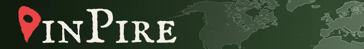

French Swiss-knife Designer
I make a lot of things : websites, brand designs, Minecraft mods, SEO… Here’s the best of my projects:
Durandet Studio
Inquire about any brand/web related projects.
Department of Racing Drivers
Complete Racing Calendar (25+ series)
& Worldwide Track Guides (130+ Circuits)

Pinpire
Country guessing Game from 5000BC to today